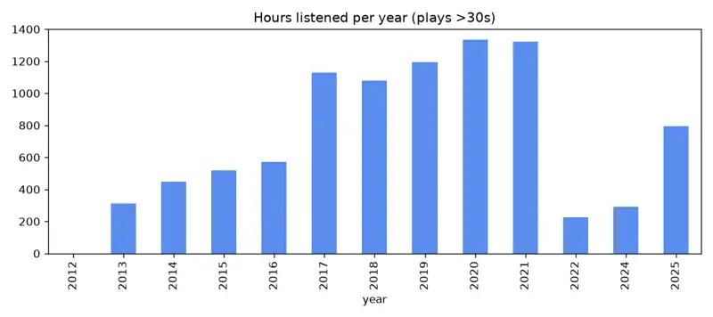
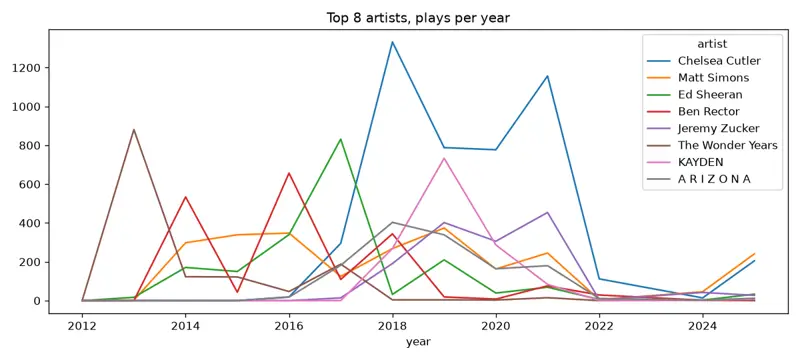
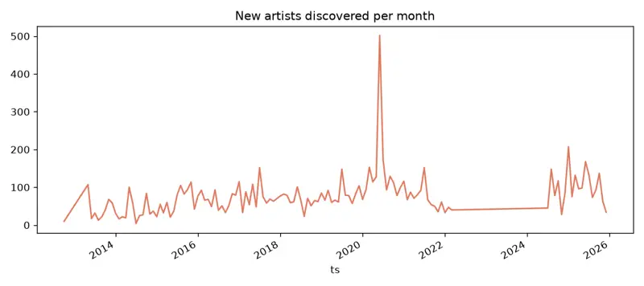
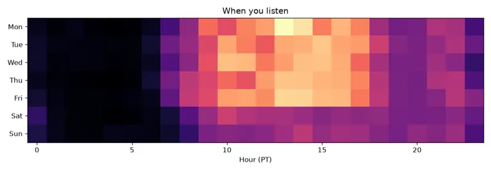

Your Music Map
About 233,599 Spotify plays, 2012-10-01 → 2025-12-11. Mar 2022 – Jul 2024 isn't in yet. Updated Oct 15, 2026.
25 new picks for you
None of these artists appear anywhere in your history (checked by name). After your feedback, these lean female-vocal or instrumental. Safe picks sit right next to your current favorites. Stretch picks take one step sideways. Try 2–3 tracks of each during a 1–4 PM work session, and keep whatever you didn't skip.
- safe 1. Former Hero
Last.fm's #2 match for Duskus. Gentle, lo-fi-tinged melodic electronic rather than drop-heavy. (instrumental / chopped vocals)
- safe 2. Avoure
On Le Youth's similar-artist list. Le Youth's pulse with more air around it. (mostly instrumental)
- safe 3. Qrion
Glassy, melancholic melodic house, like Shallou's sadness over a four-on-the-floor kick. (instrumental)
- safe 4. Sound Quelle
Monstercat Silk regular. RUDEY's lift without the pop gloss. (instrumental)
- safe 5. Cyril Hahn
Silky vocal-sample deep house: NOTD-style emotion at a slower pace. (female vocal samples)
- stretch 6. Monitor 66
Sparse, groovy deep house, a minimal reference for your own productions. (instrumental)
- stretch 7. Hosh
Hypnotic melodic deep house from the Diynamic label. A test of whether long builds work when the hook comes sooner than Lane 8's. (instrumental)
- stretch 8. Jody Wisternoff
Anjunadeep elder. Classic emotional progressive. Try single tracks, not mixes. (instrumental)
- stretch 9. Golden Features
Darker, heavier electronic from the Foreign Family label: the same emotion with more grit. (instrumental)
- stretch 10. Bicep
Euphoric-melancholy breakbeat house ('Glue'), a big influence on modern UK melodic house. (instrumental)
- stretch 11. Ólafur Arnalds
Neo-classical electronic for the deep-focus loops you've done before (Feist, 2019). Great sound-design study. (instrumental)
- stretch 12. Ben Hemsley
Melodic tech-house with big emotional breakdowns. More club energy than usual. (instrumental)
- stretch 13. Cristoph
Driving, bittersweet melodic progressive, a step toward peak-time. (instrumental)
- safe 14. Run Rivers
Airy female vocalist-producer, the voice on Tinlicker's 'Nothing Matters'. Emotional melodic house, like the female singer-songwriters you finish every time. (female vocals)
- safe 15. Lauren L'aimant
Female producer making warm, melodic deep house. A close cousin of the halocline lane. (instrumental)
- safe 16. Point Point
French future bass with glittery chords and no lead vocal: your NOTD/Shallou sweet spot. (instrumental)
- safe 17. Fakear
Organic, melodic electronica full of sampled textures, like a sunnier Duskus. (instrumental / sampled vocals)
- safe 18. Dyalla
Playful, melodic future-garage and house. Hooks land in the first 30 seconds. (instrumental)
- stretch 19. Arctic Moon
Uplifting melodic trance-adjacent. Emotional, with no slow 3-minute intros. (instrumental)
- stretch 20. Durante
Deep, emotive progressive house from the Anjunadeep orbit. A tight track-length test. (instrumental)
- stretch 21. Tseng
Dutch melodic progressive with lush pads. Instrumental Le Youth for headphones. (instrumental)
- stretch 22. Dosem
Barcelona melodic techno-house. Bittersweet arpeggios with a firmer kick. (instrumental)
- stretch 23. Stimming
Musical, detailed deep house built from real-instrument samples. Great for studying production. (instrumental)
- stretch 24. Hraach
Armenian melodic house with cinematic, wistful leads. (instrumental)
- stretch 25. Jeremy Olander
Swedish progressive with melancholy melodies, in the Pryda tradition. (instrumental)
The short version
- Three eras. You moved from pop-punk and emo (2013–15) to indie-pop and singer-songwriters with Chelsea Cutler at the center (2016–21), then to melodic house and future bass (2024 on). Each era fully replaced the one before it.
- Chelsea Cutler is your all-time #1 with 4,699 plays, about twice #2. She's the one artist who followed you into the house era.
- You're an explorer. You've played about 9,663 different artists, including 1,309 new ones in 2025 alone. Spotify feels stale because it keeps steering you back to artists you already know.
- You want the feeling in the first minute. You skip 28% of tracks overall, but Lane 8 55% of the time and Armin van Buuren 46%. Slow builds lose you. Intimate, vocal-forward artists hold you.
- Music is your workday soundtrack. Plays peak 1–4 PM, with a second bump 9–11 PM. Weekends get about 35% fewer plays.
Hours per year

2022 is a partial year and 2023 is missing until the remaining files arrive.
Your eras
| Year | Hours | Top artists | #1 track |
|---|---|---|---|
| 2013 | 312 | The Wonder Years, Silverstein, Bayside, With the Punches, I Call Fives | Passing Through A Screen Door — The Wonder Years |
| 2014 | 449 | Bayside, Ben Rector, Matt Simons, This Wild Life, Transit | Ugly Heart — G.R.L. |
| 2015 | 520 | The Story So Far, Bear's Den, Matt Simons, Neck Deep, Knuckle Puck | Sorry — Justin Bieber |
| 2016 | 573 | Ben Rector, Oh Wonder, Matt Simons, Ed Sheeran, The 1975 | Fast Car — Jonas Blue |
| 2017 | 1128 | Ed Sheeran, Chris Ayer, Oh Wonder, Chelsea Cutler, The Chainsmokers | You Make Me — Chelsea Cutler |
| 2018 | 1080 | Chelsea Cutler, A R I Z O N A, Kygo, Lauv, Ben Rector | The Reason — Chelsea Cutler |
| 2019 | 1194 | Chelsea Cutler, KAYDEN, Loote, Jeremy Zucker, Matt Simons | How To Be Human — Chelsea Cutler |
| 2020 | 1336 | Chelsea Cutler, The Weeknd, Justin Bieber, Khalid, Boy In Space | Snowchild — The Weeknd |
| 2021 | 1324 | Chelsea Cutler, Valley, Jeremy Zucker, Shallou, Justin Bieber | Walking Away — Chelsea Cutler |
| 2022 | 225 | Yoste, Valley, Kanye West, Gaustad, Cait | Sandman — Gaustad |
| 2024 | 291 | HNE, NOTD, Duskus, Shallou, puulse | Panic — NOTD |
| 2025 | 794 | heylucas, HNE, RUDEY, Indigo Eyes, Anna Graves | Salt — HNE |

Heavy rotation now
RUDEY, Anna Graves, Le Youth, HNE, Eliza Harrison Smith, ORACLE, heylucas, demotapes, Chelsea Cutler, wes mills, Massane, Duskus, EMBRZ, Indigo Eyes
The common thread is melodic house with a vocal hook and a bittersweet chord change, plus soft female singer-songwriters. That's your 2019 self meeting your 2025 self.
Faded favorites
The Wonder Years (881 plays in 2013), Ben Rector (657 plays in 2016), Bayside (571 plays in 2014), Bear's Den (346 plays in 2015), Silverstein (297 plays in 2013), Astrid S (283 plays in 2020), This Wild Life (280 plays in 2014), WVNDER (273 plays in 2017), Alec Benjamin (272 plays in 2019), The Band CAMINO (271 plays in 2019), Alessia Cara (269 plays in 2017), BLÜ EYES (265 plays in 2021).
Worth a nostalgia revisit: Bear's Den, Astrid S, BLÜ EYES, Sasha Alex Sloan. Their moods map onto what you love now.
Brief obsessions
Feist (203 plays in one day, Jan 2019), Juliet Ivy (Dec 2024), Bo Burnham (Jul 2021), Anna Lille and Adeline Hill (Sep 2025), Joel Human (Mar 2020).
What you finish vs. skip
Finish almost every time: Feist, BADBADNOTGOOD, Sara Diamond, AURORA, [SEBELL], BLÜ EYES, Ponette.
Skip most: Marianas Trench, Drake, JAY-Z, Lane 8, Armin van Buuren, Coldplay.
Discovery: new artists per month

When you listen

You build through the morning, plateau from noon to 5, dip at dinner, get a second wind from 9–11 PM, and go quiet overnight.
Tried
- Landon Ryle: disliked. Tried the first few picks and didn't like them. Landon Ryle has male vocals, which Tyler usually doesn't love.
- Kazmyn: disliked. Tried the first few picks and didn't like them.
- EDGR: disliked. Tried the first few picks and didn't like them.